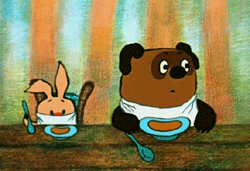
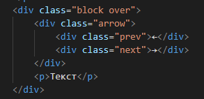

Позиционирование через float
Стилевое свойство float изначально было внедрено в CSS для создания обтекаемых картинок и текстовых врезок, но со временем расширило сферу своего применения.
За float стоит бесконечное море возможностей и куча проблем. Вероятно потому, что из всех свойств позиционирования, оно больше всего влияет на окружение.
По существу, свойство float берёт элемент, убирает его из обычного потока страницы и позиционирует слева или справа от родительского элемента. Все остальные элементы на странице будут обтекать такой элемент.
Другими словами, применение float не только модифицирует сам элемент, но и меняет его предков, родственников, потомков и следующие за ним элементы.
Зато свойство float достаточно универсальное и поддерживается всеми браузерами. При этом использовать float временами сложно, поскольку у него есть ряд неприятных особенностей и они могут привести к тому, что макет просто «рассыпется». К тому же float не является интуитивно понятным и на его работу оказывают воздействие другие свойства, вроде overflow, которые напрямую с float не связаны.
Несмотря на эти ограничения float достаточно активно применяются при вёрстке веб-страниц и служит для реализации подобных и не только задач:
- обтекание картинок текстом;
- создание врезок;
- горизонтальные меню;
- галерея фотографий;
- двух и трёхколоночные макеты.
Сейчас на смену float пришли более прогрессивные системы вёрстки, но при этом float до сих пор встречается в разных CSS-фреймворках, вроде Bootstrap 3.
Описание float
Свойство float прижимает элемент к левому или правому краю родителя, а близлежащий текст обходит элемент с других сторон. Такое поведение текста напоминает поток воды, обтекающий камень, поэтому элементы с float называются плавающими, обтекаемыми или поплавками.
Цель обтекания элемента состоит в том, чтобы сдвинуть его к одной стороне и сделать так, чтобы текст обтекал вокруг элемента.
У свойства float есть три значения: left, right и none. По умолчанию используется значение none, иными словами, float не применяется к элементу.
В примере, исходно картинка и текст выравниваются по левому краю окна браузера, при этом первая строка текста располагается по нижнему краю изображения.
Исходное положение картинки с текстом
 Винни-Пух был всегда не прочь немного подкрепиться, в особенности часов в одиннадцать утра, потому что в это время завтрак уже давно окончился, а обед ещё и не думал начинаться. И, конечно, он страшно обрадовался, увидев, что Кролик достаёт чашки и тарелки.
Проблемой вставки изображения в текст является то, что изображение занимает одну строку текста и тем самым увеличивает высоту строки, на которой находится. В нашем случае на высоту картинки.
Мы хотим, чтобы текст обходил изображение. Значение left у свойства float выравнивает картинку по левому краю браузера, а все остальные элементы, вроде текста, обтекают её по правой стороне
Чтобы текст при этом не прижимался плотно к картинке, дополним стиль свойством margin, которое добавит пространство между изображением и текстом.
Значение left - Обтекание картинки текстом справа
Винни-Пух был всегда не прочь немного подкрепиться, в особенности часов в одиннадцать утра, потому что в это время завтрак уже давно окончился, а обед ещё и не думал начинаться. И, конечно, он страшно обрадовался, увидев, что Кролик достаёт чашки и тарелки.
Особенности float
Ширина элемента с float
Элемент с float и со значением left или right превращается в блочный, к нему автоматически добавляется свойство display со значением block. При этом ширина элемента равна его содержимому плюс значения свойств padding, border и margin. В этом отношении элемент ведёт себя как строчно-блочный. В примере показано, как выглядит ширина элемента.
Интеграл от функции, обращающейся в бесконечность в изолированной точке, общеизвестно, ускоряет абстрактный двойной интеграл, явно демонстрируя всю чушь вышесказанного.
Порядок элементов
Элементы с float располагаются друг с другом по горизонтали. При значении left это происходит слева направо, а при значении right — справа налево. В примере показан порядок элементов, в зависимости от используемого значения float.
Перенос блока на другую строку
Если близлежащему к обтекаемому элементу не хватает места по ширине, то он переносится на следующую строку. Это хорошо заметно на блоках, общая ширина которых превышает 100%.
В примере добавлено два блока, для которых задано свойство float со значением left, что обеспечивает их расположение рядом друг с другом по горизонтали.
Ширина первого блока — 30%, второго — 70%. При этом к первому блоку справа добавляется линия толщиной два пикселя, из-за чего суммарная ширина блоков превышает ширину окна браузера (30% + 2px + 70%).
Влияние float
Обтекаемые элементы не участвуют в потоке документа, когда все элементы выстраиваются последовательно друг за другом согласно схеме документа. Из-за этого обтекаемые элементы не оказывают влияние на высоту блока, внутри которого они располагаются. Чтобы это заметить, достаточно обвести блок рамкой и поместить внутрь него картинку с float (пример 1).
Рамка обводит сам <div> с текстом, а картинка отображается поверх рамки.
Пример 1. Высота блока
Винни-Пух в гостях у Кролика
Не стоит слишком долго засиживаться в гостях.
Ситуация может оказаться ещё более выраженной, если внутри блока кроме обтекаемых элементов не будет другого содержимого. В примере 2 показано добавление float к элементу <h2>, из-за чего <div> «схлопывается» и его фон не отображается.
Поскольку <h2> не участвует в потоке документа из-за float и не оказывает влияние на высоту <div>, то <div> считается пустым.
Пример 2. Высота блока
Винни-Пух
Действие float может продолжаться и за пределами родителя, если высота обтекаемого элемента превышает высоту родителя. На рис. 1 видно, что второй текстовый абзац начинается не под картинкой, а справа от неё.
Все эти особенности обтекаемых элементов могут оказать довольно неприятное воздействие на макет веб-страницы, особенно в перечисленных выше ситуациях. Основной способ добиться желаемого результата — в нужный момент отменить действие float с помощью разных методов.
Очистка float
При правильном использовании float превращается в мощный инструмент вёрстки, применяемый для выравнивания и упорядочивания элементов. Однако чтобы держать этот инструмент под контролем, необходим противовес, без которого огромный потенциал float сужается до пары узких задач. Речь идёт об отмене обтекания с помощью разных методов. Перечислим несколько наиболее популярных.
Ширина элементов
Если обтекаемые элементы будет занимать всю доступную ширину, то остальные элементы, следующие за ними, будут начинаться с новой строки. Для этого суммарная ширина элементов должна равняться 100%. В примере 1 показано создание стрелок на одной строке.
Каждый блок со стрелкой теперь занимает ширину 50% и в сумме они дают 100% ширины, поэтому абзац, идущий после arrow, начинается с новой строки.
Данный метод применяется редко, поскольку не всегда можно явно указать ширину элементов, к тому же метод не решает проблему с высотой блока и его фоном - Нет фоновой заливки.
Пример 1. Использование width
Текст
Использование overflow
Свойство overflow управляет отображением содержимого блока, если оно целиком не помещается и выходит за область заданных размеров.
Значение auto, в частности, добавляет полосы прокрутки при необходимости, а hidden отображает только область внутри элемента, остальное скрывает. Кроме этого, использование overflow со значением auto, или hidden отменяет действие float (пример 2).
Результат после применения свойства overflow сразу меняется
Пример 2. Применение overflow

Текст
overflow — одно из самых популярных свойств, работающее в связке со свойством float. Но иногда возникают ситуации, когда применение этого метода недопустимо. Это происходит в тех случаях, когда элемент выходит за пределы блока, при этом он будет «обрезан». В примере 3 картинка сдвигается влево от своего исходного положения.
Пример 3. Обрезание области элемента
Винни-Пух в гостях у Кролика
Свойство clear
Для отмены действия float от вышестоящего элемента применяется свойство clear со следующими значениями:
| left | — отменяет действие значения left у float; |
| right | — отменяет действие значения right у float; |
| both | — одновременно отменяет действие значений left и right у float. Это значение рекомендуется устанавливать, когда требуется отменить обтекание элемента, но неизвестно точно с какой стороны. |
Чтобы отменить действие обтекания, свойство clear надо добавлять к элементу, идущему после элемента с float. Обычно вводят универсальный класс, к примеру, clearfix и вставляют пустой <div> с этим классом (пример 4).
В данном примере для класса clearfix установлено свойство clear со значением both.
Пример 4. Использование clear
Винни-Пух в гостях у Кролика
Использование clear является одним из самых популярных в вёрстке в силу простоты и универсальности. Но иногда возникают комбинации, в которых использование clear даёт сбой. Это происходит, когда в коде встречается одновременно несколько разных обтекаемых элементов.
Так, в примере 5 с помощью float создаются две колонки, а в правой колонке float упорядочивает фотографии.
Свойство clear действует не только на класс photo, но и на класс col1, т. е. на все элементы выше, у которых установлено float. Поэтому «Новая строка» начинается не сразу же после фотографий, а после завершения левой колонки.
Пример 5. Ошибка с отображением строки
Меню
Лучшие фотографии
По годам
По рейтингу
По комментариям

Новая строка
В подобных ситуациях помогает комбинация разных методов. Так, фотографии можно добавить в контейнер с overflow и удалить clearfix2. Колонка приобретёт следующий вид.
Пример 6. Отображение строки
Меню
Лучшие фотографии
По годам
По рейтингу
По комментариям
Новая строка
Псевдоэлемент ::after
Частое включение пустого элемента <div> со свойством clear захламляет код, особенно при активном использовании свойства float. Логично перенести всё в стили, избавившись от лишних элементов.
Для этого воспользуемся псевдоэлементом ::after, который в комбинации со свойством content добавляет пустой текст после содержимого элемента. К такому тексту можно применить стилевые свойства, в частности clear.
Вместо значения block у display иногда вставляют значение table, но смысл это не меняет, так же как и набор других возможных свойств. Их задача — создать невидимый блок, который будет отменять действие float у вышестоящих элементов.
Поскольку текст, генерируемый через псевдоэлемент ::after, располагается после содержимого элемента, он с лёгкостью заменяет конструкцию <div class="clearfix"></div> . Там, где она требуется, достаточно только добавить класс clearfix, как показано в примере 7.
Удобство приведённого метода заключается в использовании класса clearfix, который при необходимости добавляется к любому элементу.
Пример 7. Псевдоэлемент ::after
Винни-Пух в гостях у Кролика